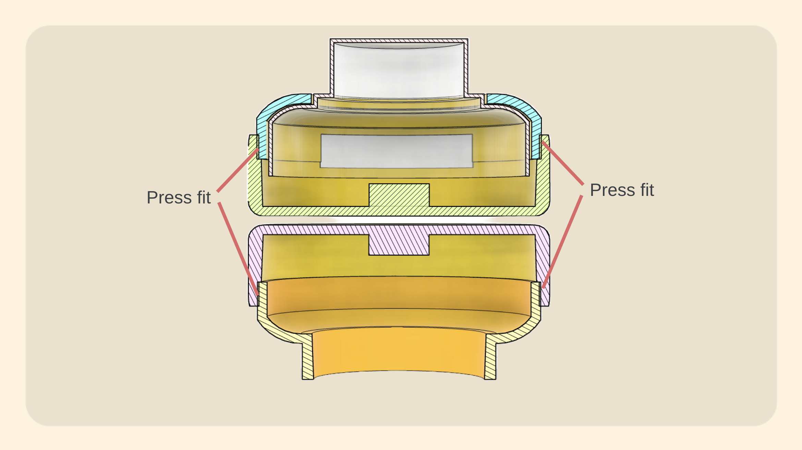
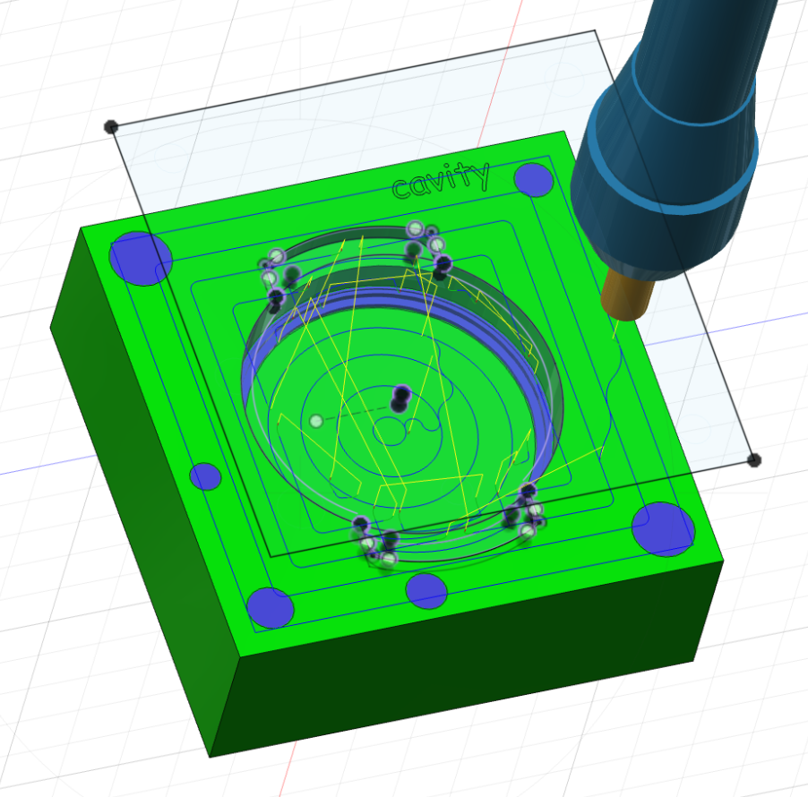
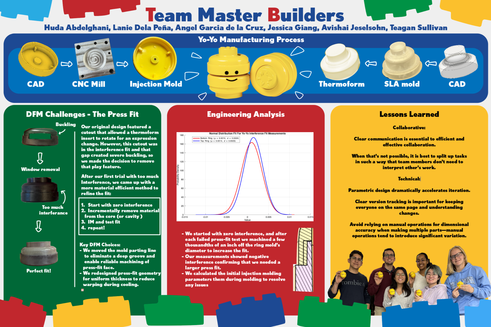

Relevant Skills
CNC Mill
Fusion Autodesk CAM
Injection Molding
Plastic Thermoforming
DFM & DFA
Project Summary
Built for 2.008 (Design and Manufacturing II), these Lego-themed yoyo's were designed and manufactured alongside five other students. Click Here to see the full project report, outlining all of the analysis and design choices that lead to the final yo-yos.
Class Requirements: Design a yo-yo for mass manufacturing by injection molding and thermal forming, submit 50 yo-yo's with a press fit strong enough to survive a ~4ft drop.
Team Requirements: Design a Lego-Themed yo-yo where a pair of yo-yo's can fit together, reminiscent of the real life lego!
Design
The team spent some time coming up with different themes that we could base our yo-yo design upon.
The concept was to make a yo-yo that is interactive, this would be acheived primarily through a window in the top half of the yoyo where the user could pivot the thermoformed knob in the top to reveal different facial expressions.

The team created a model of the yo-yo, accounting for shrinkage which a teammate ran simulations to quantify, including draft angles, optimizing for straight pull injection molding, and ensuring we were comfortably below the maximum shot size.

- The pressfit: a value we averaged from past years yo-yos as well as known interference fit values off of various databases.
- Draft angles: 2 degree draft angle on all injection molded parts.
- Part thickness: almost perfectly uniform, excluding the material in the center which is space for a nut to enable connecting the two halves of the yo-yo, and the small step in the inner diameter of the body to maintain the height of each half of the yo-yo assembly.
CNC Molds
Fusion CAM was used to create the tool paths for each part.
Each mold required a CNC milled core and cavity with a few key features
- Sprue
- Runner
- Openings for ejector pins
- Gate
- Through hole for shoulder bolt (aligns the overmolded nut)
Since the interference fit was our greateest unknown, we designed the molds such that the fit will be too loose and we can remill to incrementally remove material



Injection molding

A series of injection molding runs allowed us to tune specs such as shot size, temperature, packing pressure cooling time etc. This process was repeated for all parts.

The window was preventing a proper pressfit since it significantly reduced the rigidity of the part. At this stage we only had a few weeks until 50 yo-yos were due, so we decided to remove the window feature and focuse on acheiving a proper fit.
Thus we moved to a simplified design with a permanent facial expression.

Thermoformed parts
The first step was to CAD a mold for the part, which accounts for the thickness of the plastic. This was SLA printed, then I used a drill press to create small holes for proper vacuuming of the plastic onto the mold.


In order to create that iconic lego-man yellow with the provided white thermoplastic sheets, the team decided to use car vinyl adhered onto the plastic prior to molding. We ran a series of tests to tune molding conditions with the additional vinyl material.
Manufactuting, Assembly & Aesthetics

The final details entailed color matching the platic pellets for injection molding with the vinyl we'll use for the thermoforming plastic.
We created a mass ratio of a few colors to create the color match.
Takeaways and Final Thoughts
